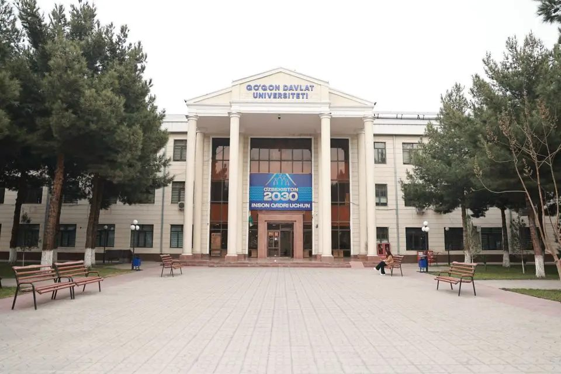
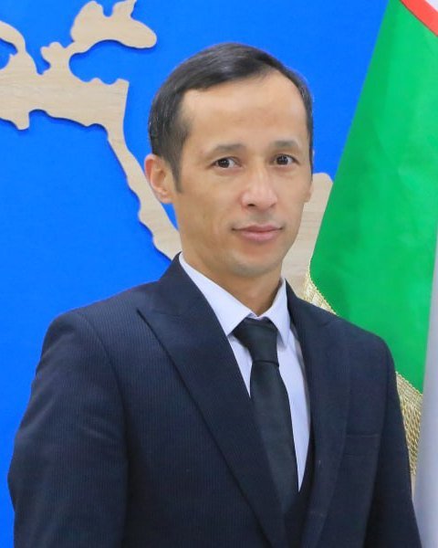

Eshboltayev Iqbol Mamirjonovich
Professor, falsafa doktori (PhD)
Fizika va astronomiya kafedrasi. Elektron darsliklar va fan dasturlari muallifi.

Fizika va astronomiya kafedrasining interaktiv elektron darsliklari: ma’ruzalar, amaliy va laboratoriya mashg‘ulotlari, virtual laboratoriyalar, nazorat testlari va o‘zbekcha ovozli o‘qish.
Darslik nomini yoki “Darslikni ochish” tugmasini bosing. Darslikdan chiqish uchun uning yuqori qismidagi “Portal” tugmasidan foydalaning.
EM1306 · Bakalavriat
Kulon qonuni va Gauss teoremasidan o‘zgarmas tok, magnit maydon, elektromagnit induksiya, Maksvell tenglamalari va o‘zgaruvchan tokkacha.
FP11234562 · Bakalavriat
Elektr, magnetizm va optika bo‘yicha laboratoriya ishlari: nazariya, o‘lchash tartibi, natijalar jadvali, xatoliklar hisobi va virtual laboratoriya.
NM1406 · Bakalavriat
Eng kichik ta’sir prinsipi, Lagranj va Gamilton formalizmi, markaziy maydon, tebranishlar, qattiq jism va relyativistik mexanika asoslari.
YAAF1206 · Magistratura
p-n o‘tish va Shottki kontaktidan bipolyar va maydon tranzistorlari, fotoelektrik asboblar va zamonaviy yarimo‘tkazgich texnologiyalarigacha.
Hech narsa topilmadi. Boshqa so‘z bilan qidirib ko‘ring.
Katalogdan fanni tanlang. Har bir darslikda fan dasturi, ta’lim natijalari, baholash mezonlari va 15 haftalik taqvim berilgan.
Nazariyani o‘qing yoki o‘zbekcha ovozda tinglang, interaktiv modelda parametrlarni o‘zgartiring, ishlangan misol va testni bajaring.
Darsliklar ochiq o‘quv resursi. Rasmiy topshiriqlar, nazoratlar va baholash universitetning HEMIS axborot tizimida amalga oshiriladi.
Tabiiy fanlar va iqtisodiyot fakulteti
Kafedra fizika va astronomiya bo‘yicha bo‘lajak o‘qituvchi va tadqiqotchilarni tayyorlaydi. Fan dasturlari xalqaro tajriba, jumladan Al-Farobiy nomidagi Qozog‘iston milliy universiteti dasturlari asosida takomillashtirilgan.
Elektron darsliklar ECTS va Bolonya jarayoni talablari, konstruktiv moslashuv tamoyili, Quality Matters kurs dizayni mezonlari, WCAG 2.2 veb-qulaylik standarti va UNESCO ochiq ta’lim resurslari tavsiyasi asosida ishlab chiqilgan.
| Kod | Yo‘nalish / mutaxassislik | Daraja |
|---|---|---|
| 60530500 | Fizika | Bakalavriat |
| 60530700 | Astronomiya | Bakalavriat |
| 70530504 | Yarimo‘tkazgichlar fizikasi | Magistratura |
| 70530510 | Aniq va tabiiy fanlarni o‘qitish metodikasi (fizika va astronomiya) | Magistratura |
Professor, falsafa doktori (PhD)
Fizika va astronomiya kafedrasi. Elektron darsliklar va fan dasturlari muallifi.

Dotsent, falsafa doktori (PhD)
Fizika va astronomiya kafedrasi dotsenti. Elektron darsliklar hammuallifi.
Universitet tarixi 1931-yil yanvarda Qo‘qon shahrida tashkil etilgan kechki pedagogika institutidan boshlanadi. 1943-yilda institutga ma’rifatparvar shoir Muqimiy nomi berilgan. Institut o‘nlab yillar davomida Farg‘ona vodiysi uchun pedagog kadrlar tayyorlashning yetakchi markazi bo‘lib kelgan.
2025-yilda Qo‘qon davlat pedagogika instituti, Toshkent davlat texnika universiteti Qo‘qon filiali hamda O‘zbekiston davlat san’at va madaniyat instituti Farg‘ona mintaqaviy filiali negizida Qo‘qon davlat universiteti tashkil etildi. 2026-yilda universitetning to‘rtta ta’lim dasturi Germaniyaning ASIIN agentligi akkreditatsiyasidan o‘tdi.
Universitet rasmiy sayti ↗